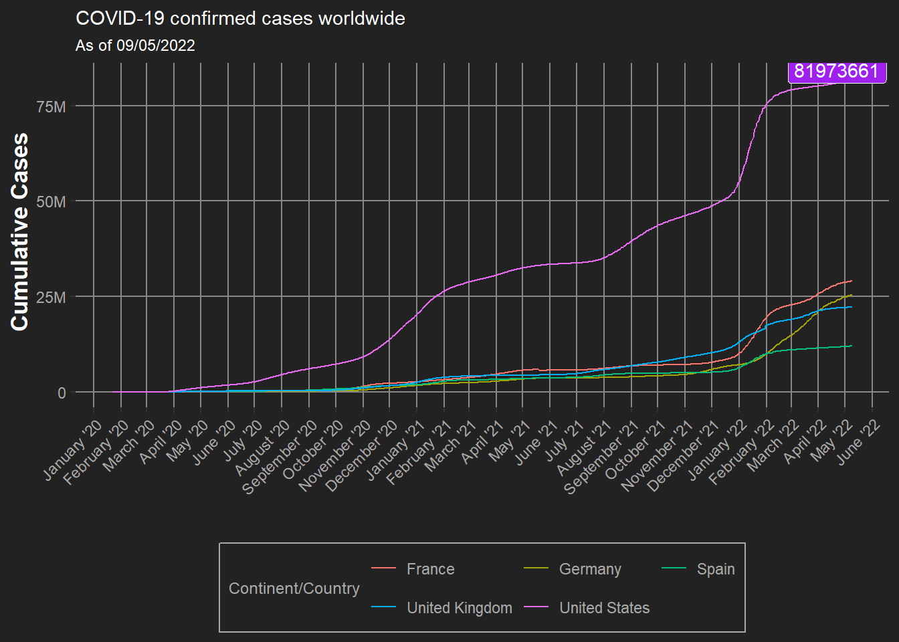
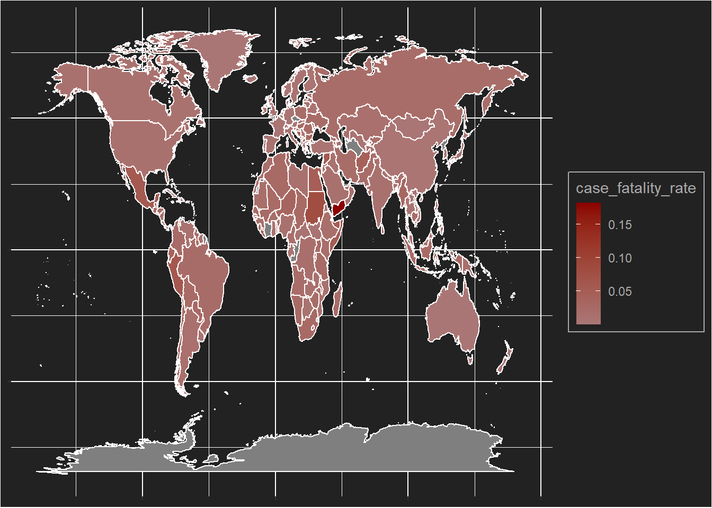
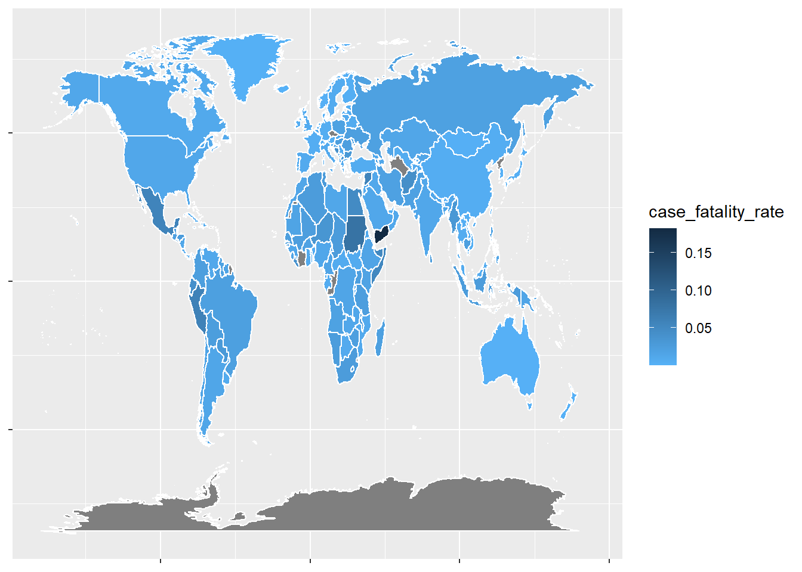

Last compiled: 2023-05-24
I learned a lot about the themes in this part.
Total covid cases data was plotted against time.
library(tidyverse)
covid_data_tbl <- read_csv("https://covid.ourworldindata.org/data/owid-covid-data.csv")
covid_data_tbl %>%
head(n=5)places <- c('Germany', 'France', 'Spain', 'United Kingdom', 'United States')
places_europe <- c('Germany', 'France', 'Spain', 'United Kingdom')
covid_data_tbl_selected <- covid_data_tbl %>%
filter(location %in% places)
last_date <- max(covid_data_tbl$date)
first_date <- min(covid_data_tbl$date)
US_covid_data_tbl <- covid_data_tbl %>%
filter(location == "United States")
us_last_case <- max(US_covid_data_tbl$total_cases)
ggplot(covid_data_tbl_selected, aes(x = date, y = total_cases)) +
geom_line(aes(color = location)) +
geom_label(x = last_date- (last_date - first_date)/50, y = us_last_case + 3 * us_last_case/100, label=us_last_case, fill = "purple", color = "white") +
labs(colour = "Continent/Country",
subtitle = "As of 09/05/2022") +
ggtitle("COVID-19 confirmed cases worldwide") +
xlab("") +
ylab(" Cumulative Cases") +
theme(title = element_text(
color = "White",
vjust = 1,
size = 9
),
legend.position = "bottom",
legend.background = element_rect(
fill = "#222222",
color = "#aaaaaa"
),
legend.text = element_text(
color = "#aaaaaa",
),
legend.title = element_text(
color = "#aaaaaa",
hjust = 0.5,
vjust = 0.5
),
axis.text.x = element_text(
angle = 45,
hjust = 1),
plot.background = element_rect(
color = "#222222",
fill = "#222222",
size = 0.1),
panel.background = element_rect(
color = "#222222",
fill = "#222222"
),
panel.grid = element_line(
color = "#888888"
),
panel.grid.minor = element_blank(),
legend.key = element_rect(
fill = "#222222"
),
axis.text = element_text(
color = "#aaaaaa"
),
axis.title = element_text(
color = "white",
face = "bold",
size = 13
)) +
scale_x_date(date_breaks = "1 month",
date_labels = "%B '%y") +
scale_y_continuous(breaks=c(0, 25000000,50000000,75000000),
labels = c("0", "25M", "50M", "75M")) +
guides(color=guide_legend(nrow=2, byrow=TRUE)) 
Case-fatality rate in every countries were plotted on a map.
library(tidyverse)
library(MAP)
library(purrr)
world <- map_data("world")
covid_data_tbl <- read_csv("https://covid.ourworldindata.org/data/owid-covid-data.csv")
latest_date <- covid_data_tbl$date%>%
max()
covid_data_tbl_plot <- covid_data_tbl %>%
select(date, location, total_cases, total_deaths) %>%
drop_na() %>%
filter(date == latest_date)
world_covid <- covid_data_tbl_plot %>%
mutate(location = case_when(
location == "United Kingdom" ~ "UK",
location == "United States" ~ "USA",
location == "Democratic Republic of Congo" ~ "Democratic Republic of the Congo",
TRUE ~ location
)) %>%
distinct() %>%
right_join(world, c("location" = "region")) %>%
mutate(case_fatality_rate = total_deaths/total_cases)
ggplot() +
geom_map(data = world_covid,
aes(x = long,
y = lat,
map_id = location,
fill = case_fatality_rate,
),
col = "white",
map = world) +
scale_fill_gradient(low="#aa7776", high="#8b0000")+
theme(axis.title = element_blank(),
axis.text = element_blank(),
plot.background = element_rect(
fill = "#222222"
),
panel.background = element_rect(
fill = "#222222"
),
legend.background = element_rect(
fill = "#222222",
color = "#aaaaaa"
),
legend.text = element_text(
color = "#aaaaaa",
),
legend.title = element_text(
color = "#aaaaaa",
hjust = 0.5,
vjust = 0.5
)
)
world_covid %>%
ggplot(aes(x=long, y = lat, group = group)) +
geom_polygon(aes(fill = case_fatality_rate), color = "white") +
scale_fill_gradient(low="#56B1F7", high="#132B43") +
theme(axis.title = element_blank(),
axis.text = element_blank())